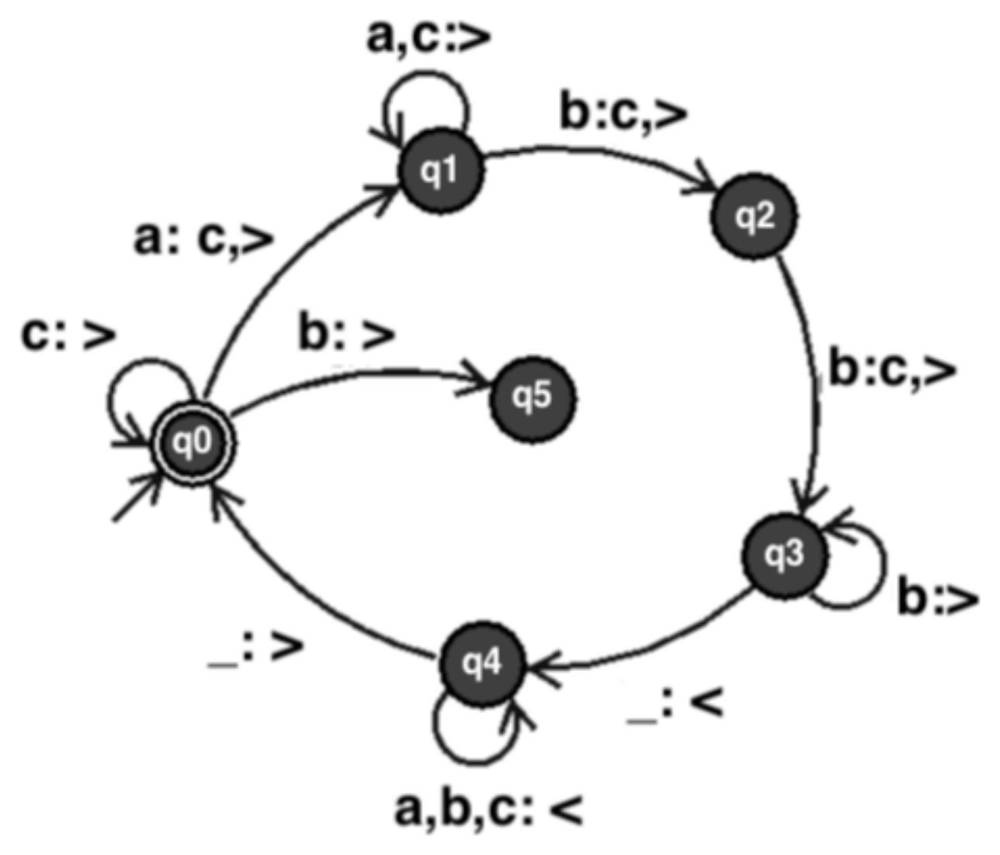

田中哲郎クラス｜7月29日 4限｜大問2
LOAD n：n番地の内容をアキュムレータにコピーする／ADD n：n番地の値をアキュムレータの値に加える／STORE n：アキュムレータの値をn番地に格納する／STOP n：プログラムを終了する／MUL n：アキュムレータの値にn番地の値を掛ける／SUB n：アキュムレータの値からn番地の値を引く／J n：無条件でn番地にジャンプ／JM n：アキュムレータの値が負のときにn番地にジャンプ／JZ n：アキュムレータの値がゼロのときにn番地にジャンプ。
たとえば、ED21の機械語で書かれた以下のプログラム（0番地から実行、1000番地=0、1001番地=$n$（$1\le n\le50$）、1002番地=1）を考える。
| 番地 | 内容 |
|---|---|
| 0 | LOAD 1000 |
| 1 | ADD 1001 |
| 2 | STORE 1000 |
| 3 | LOAD 1001 |
| 4 | SUB 1002 |
| 5 | STORE 1001 |
| 6 | JZ 8 |
| 7 | J 0 |
| 8 | LOAD 1000 |
| 9 | STOP 0 |
| 1000 | 0 |
| 1001 | $n$（$1\le n\le50$） |
| 1002 | 1 |
これは何をするプログラムかというと、「0番地から実行したとき、停止時のアキュムレータに1から$n$までの和を得る」プログラムである。また、その実行ステップ数は$8n+1$となる（最後のSTOP命令も実行ステップに数える）。
同様にプログラム(1)について、(a) 何をするプログラムか？ (b) 実行ステップ数はいくつか？ を答えなさい。また、プログラム(2)はプログラム(1)と同じ計算をおこなうプログラムである。(c) プログラム(1)と同じ計算をおこなっていることの説明 (d) 実行ステップ数はいくつか？ を答えなさい。プログラム(2)はプログラム(1)と同じ計算をおこなっているにも関わらず、プログラム(1)よりも少ない実行ステップ数で計算できる。（1000番地=$l$、1001番地=$n$、1002番地=$m$、$1\le l,n,m\le100$、$m<n$）
| プログラム(1) 番地 | 内容 |
|---|---|
| 0 | LOAD 1004 |
| 1 | ADD 1000 |
| 2 | STORE 1004 |
| 3 | LOAD 1002 |
| 4 | ADD 1003 |
| 5 | STORE 1002 |
| 6 | SUB 1001 |
| 7 | JZ 9 |
| 8 | J 0 |
| 9 | LOAD 1004 |
| 10 | STOP 0 |
| 1000 | $l$（$1\le l\le100$） |
| 1001 | $n$（$1\le n\le100$） |
| 1002 | $m$（$1\le m<n$） |
| 1003 | 1 |
| 1004 | 0 |
| プログラム(2) 番地 | 内容 |
|---|---|
| 0 | LOAD 1001 |
| 1 | MUL 1000 |
| 2 | STORE 1001 |
| 3 | LOAD 1002 |
| 4 | MUL 1000 |
| 5 | STORE 1002 |
| 6 | LOAD 1001 |
| 7 | SUB 1002 |
| 9 | STOP 0 |
| 1000 | $l$（$1\le l\le100$） |
| 1001 | $n$（$1\le n\le100$） |
| 1002 | $m$（$1\le m<n$） |
※番地7の次が9になっている（8番地が存在しない）のは原本PDF通り。
プログラム(1)は何をするプログラムか。実行ステップ数はいくつか。
トレースすると：1004番地の値$R$（初期0）に毎ループ1000番地の$l$を加え続け（$R\mathrel{+}=l$）、1002番地の値$M$（初期$m$）を毎ループ1増やし、$M$が$n$（1001番地）に一致したら停止してRを返す。
つまり$M$を$m$から$n$まで1ずつ増やす（$n-m$回）間、$R$に$l$を足し続けるので、$R=l\times(n-m)$を計算するプログラムである。
非最終ループは9ステップ（LOAD1004,ADD1000,STORE1004,LOAD1002,ADD1003,STORE1002,SUB1001,JZ(不成立),J0）、最終ループは10ステップ（同じ7ステップ+JZ成立+LOAD1004+STOP）。ループ回数は$n-m$回。
プログラム(2)が同じ計算をしていることを説明し、実行ステップ数を求めよ。
プログラム(2)は、1001番地に$n\times l$を、1002番地に$m\times l$を計算してから代入し、最後に$n l - ml$を計算する。分配法則$l(n-m)=nl-ml$により、これはプログラム(1)と同じ$l\times(n-m)$を計算していることになる。
ループを使わない直線的な処理（LOAD,MUL,STORE,LOAD,MUL,STORE,LOAD,SUB,STOPの9命令）なので、常に一定の9ステップで終わる——$n-m$がいくつであってもステップ数が変わらないプログラム(1)より速い。
プログラム(1)(2)と同じ計算を、プログラム(2)よりも少ないステップ数で行うプログラムを作成せよ。
プログラム(2)は2回の掛け算を行ってから引き算しているが、先に$(n-m)$を求めてから$l$を1回だけ掛ければ、掛け算1回・引き算1回で済む：
| 番地 | 内容 |
|---|---|
| 0 | LOAD 1001 |
| 1 | SUB 1002 |
| 2 | MUL 1000 |
| 3 | STOP 0 |
| 1000 | $l$ |
| 1001 | $n$ |
| 1002 | $m$ |
$AC=n\to n-m\to (n-m)\times l$、STOPで停止時のアキュムレータに$l(n-m)$が残る。
$l(n-m)=ln-lm$という分配法則は数学的には同じ値を表すが、計算の「手順」としては、先に引き算をしてから1回だけ掛け算する方が、2回掛け算してから引き算するより演算回数が少なく済む。ステップ数（計算量）を意識するとき、数式として等価な変形の中でも「どの順序で計算するか」で実際のコストが大きく変わりうる、という好例。
左図はあるチューリングマシンを表す（q0が受理状態＝2重丸）。遷移規則は「<読んだ文字の集合>:<書き換える文字>,<移動方向>」の形（書き換える文字が読んだ文字と同じ時は省略、空白は「_」、右移動「>」、左移動「<」）。

あるチューリングマシンの動作（チェック表）：ab→拒否、ba→拒否、abb→受理、aa→拒否、bb→拒否、bba→拒否、abbabb→(a)、aabbbb→(b)、bbb→(c)、abbabbabb→(d)、aaabbbbbb→(e)。(f)〜(h)も埋めよ：「このチューリングマシンは文字a,bからなる文字列を入力とする。文字列が(f)時に受理する。入力aabbを与えたとき、停止時の状態は(g)で、テープに残る文字列は(h)になる。」
図の遷移を実際にたどる。q0は先頭からcを読み飛ばし、最初の未処理'a'を'c'に書き換えてq1へ（＝aを1個見つけて印をつける）。ここでq0は'b'を読むと即座にq5（罠状態、抜け出せず非受理）へ落ちる点が重要——「次の未処理aより手前に未処理bが残っていてはいけない」という制約になる。q1はa,cを読み飛ばして（他のaはスキップしてよい）最初の未処理'b'を'c'に書き換えq2へ。q2はスキップ猶予なしで直後の文字を読み、それが'b'なら'c'に書き換えq3へ（'a'や空白ならその場で停止＝拒否）。q3はさらに'b'を読み飛ばし、空白に達したら左へ戻ってq4へ。q4は何でも読み飛ばして先頭の空白まで戻り、q0へ（次のラウンドへ）。q0が先頭から走査して空白に達する（＝全部'c'に消し込み済み）とそこで停止＝受理。
このため受理されるのは「aが$n$個連続した直後にbがちょうど$2n$個連続する形（$a^nb^{2n}$、$n\ge0$）」——1個の'a'を消し込むたびに、直後から連続する'b'をちょうど2個消し込む、を$n$回繰り返して過不足なく全部消し込める場合に限られる。aとbのブロックが2回以上に分かれている場合は、1回目のブロックを消し込み終えた直後にq3が次の文字（2番目のブロックの'a'）を読んで遷移先がなく即座に停止する（拒否）。
(f) 文字列が「aが$n$個（$n\ge0$）連続した直後にbが$2n$個連続する形（$a^nb^{2n}$）」であるとき。
(g)(h) 入力aabbを実際にたどる：1ラウンド目でq0が1文字目の'a'を'c'に書き換えq1へ→q1は2文字目の'a'を読み飛ばし3文字目の'b'を'c'に書き換えq2へ→q2は4文字目の'b'を'c'に書き換えq3へ→q3は空白に達しq4で先頭まで戻りq0へ（テープ：c,a,c,c）。2ラウンド目でq0は2文字目の'a'（まだ未処理）を'c'に書き換えq1へ（テープ全体がc,c,c,cになる）→q1は3・4文字目の'c'を読み飛ばして空白に達するが、q1には空白に対する遷移が定義されていないためここで停止する。よって停止時の状態はq1、テープに残る文字列はcccc（4文字すべて消し込み済み、対応するbが尽きて2個目のaを消し込めなかったため拒否）。
2つの暗証番号「abc」または「bac」のどちらが押されても解錠する（終了状態になる）ような電子錠に対応するオートマトンを作成して図にしなさい。入力中に正しい暗証番号の列が含まれていたら（途中に他の文字が混じっていても構わず、部分列としてではなく連続した並びとして現れれば）必ず解錠するものとする。入力は「a」「b」「c」の3文字だけと仮定してよい。一度解錠されたら、どんな文字が来ても解錠されたままとする。
「abc」「bac」どちらのパターンにどこまで一致しているか」を状態として持つ（複数パターンの部分一致を管理する構成法＝Aho-Corasick法の考え方）。$S_0$（無一致）、$S_a$（"a"に一致）、$S_b$（"b"に一致）、$S_{ab}$（"ab"に一致）、$S_{ba}$（"ba"に一致）、解錠（吸収状態）の6状態。
| 状態 | a | b | c |
|---|---|---|---|
| $S_0$（開始） | $S_a$ | $S_b$ | $S_0$ |
| $S_a$ | $S_a$ | $S_{ab}$ | $S_0$ |
| $S_b$ | $S_{ba}$ | $S_b$ | $S_0$ |
| $S_{ab}$ | $S_{ba}$ | $S_b$ | 解錠 |
| $S_{ba}$ | $S_a$ | $S_{ab}$ | 解錠 |
| 解錠 | 解錠 | 解錠 | 解錠 |
各状態は「これまでに読んだ文字列の末尾が、abc・bacのどの途中まで一致しているか」を表す。たとえば$S_{ab}$（"ab"に一致）の直後に「a」を読むと、末尾は"...aba"となり、これに一致する最長の候補は"ba"（bacの先頭2文字）なので$S_{ba}$に移る、という要領で全遷移を決める。"c"を読んで一致が完成する（$S_{ab}$または$S_{ba}$から）とき、初めて解錠状態に入る。
検算：入力「abac」→$S_0\xrightarrow{a}S_a\xrightarrow{b}S_{ab}\xrightarrow{a}S_{ba}\xrightarrow{c}$解錠（"bac"が2〜4文字目に含まれるので正しく解錠）。
「0」，「1」からなる2進数を上位の桁から入力して、入力された数が5の倍数の時に終了状態になるオートマトンを作成して図にしなさい。何も入力がない場合は0と等しいので5の倍数だとする。
状態は「これまでの値を5で割った余り」（0〜4の5通り）。新しい桁$d$を読むと新しい余り$=(2r+d)\bmod5$。余り0が受理（開始状態でもある）。
| 状態（余り） | 0 | 1 | 2 | 3 | 4 |
|---|---|---|---|---|---|
| 0を読む | 0 | 2 | 4 | 1 | 3 |
| 1を読む | 1 | 3 | 0 | 2 | 4 |
（例：余り2の状態で1を読むと$2\times2+1=5\equiv0\pmod5$、余り0の受理状態へ。）5状態がちょうど必要（5を法とした余りの種類の数だけ区別が要る）。
「abc」「bac」のように複数の候補パターンを同時に監視したいとき、それぞれ別々のオートマトンを用意するのではなく、「今どのパターンのどこまでに一致しているか」を1つの状態にまとめてしまうのが定石（Aho-Corasick法の考え方そのもの）。パターン同士が共有する接尾辞・接頭辞（ここでは"a","b"が両パターンの先頭に現れる）をうまく利用することで、状態数を必要最小限に抑えられる。